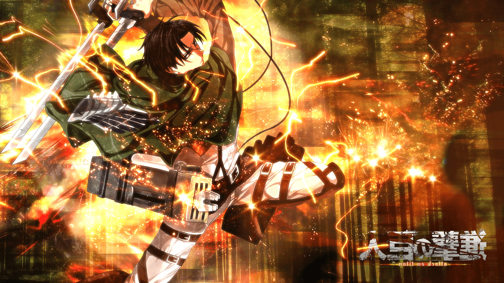
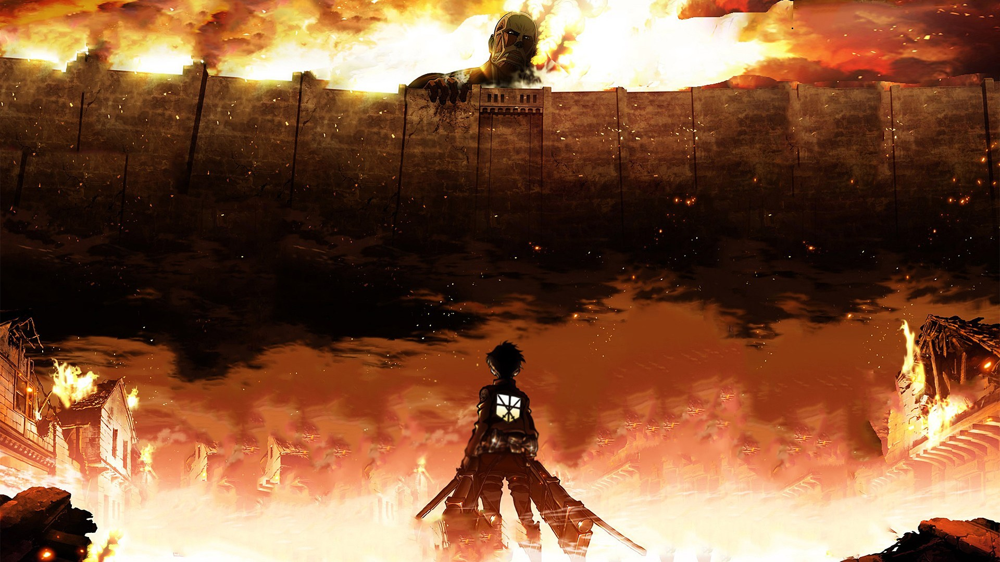

Shingeki No Kyojin (進撃の巨人) yang diterbitkan di Indonesia dengan judul Attack on Titan adalah sebuah seri manga shōnen asal Jepang yang ditulis dan diilustrasikan oleh Hajime Isayama. Ceritanya berlatar di dunia tempat umat manusia hidup di wilayah yang dikelilingi tiga lapis tembok besar, yang melindungi mereka dari makhluk pemakan manusia berukuran raksasa yang dikenal sebagai Titan. Manga ini dimuat berseri dalam majalah Bessatsu Shōnen Magazine terbitan Kodansha sejak bulan September 2009. Manga ini telah diadaptasi menjadi sebuah seri anime yang diproduksi oleh Wit Studio (Season 1–3) dan MAPPA (Season 4). Season pertama yang terdiri dari 25 episode ditayangkan sejak bulan April hingga September 2013, diikuti oleh season kedua sebanyak 12 episode dari bulan April hingga Juni 2017. Season ketiga yang terdiri dari 22 episode ditayangkan menjadi dua bagian. 12 episode pertama ditayangkan sejak bulan Juli hingga Oktober 2018 dan 10 episode tersisa ditayangkan sejak bulan April hingga Juli 2019. Season keempat saat ini baru berjumlah 11 episode, jadwal tayang season keempat yaitu setiap hari senin dan terakhir tayang tanggal 22 Februari 2021.
Founding Titan adalah Titan Shifter yang kemampuannya paling hebat. Kemampuan utama Founding Titan adalah teriakannya dapat menciptakan Titan dari bangsa Eldia, mengendalikan perilaku Titan, hingga memanipulasi memori dan tubuh Subjek Ymir (orang Eldia).
Kemampuan War Hammer Titan adalah dapat membuat berbagai struktur (biasanya palu dan pasak) dari daging Titan miliknya yang dikeraskan. Yang paling unik dari Titan ini adalah dia dapat dikendalikan dari jarak jauh, sehingga pemilik tidak harus berada di tengkuk leher sang Titan.
Kemampuan terbesar Jaw Titan berasal rahang dan kuku yang sangat kuat. Selain itu, Titan spesial ini adalah yang tercepat di antara sembilan Titan Shifter.
Attack titan memiliki skill ajaib, kemampuan menarik Attack Titan adalah dia mampu melihat ingatan para pemilik attack titan di masa lalu maupun masa yang akan datang.
Beast Titan satu-satunya yang memiliki wujud lebih menyerupai hewan. Beast Titan memiliki beberapa kemampuan Founder Titan, seperti mampu memberi perintah ke Titan biasa hingga dapat mengubah bangsa Eldia menjadi Titan dengan meminum cairan tulang punggung beast titan.
Titan collosal memiliki tinggi hingga 60 meter. Kekuatannya juga berbanding lurus dengan besarnya. Selain itu, Colossal Titan mampu menghasilkan uap panas dari tubuhnya yang bisa melelehkan manusia.
Titan Shifter yang satu ini mungkin memiliki wujud yang paling keren diantara Titan lainnya. Seluruh tubuh Armored Titan dilapisi oleh kulit yang keras bagaikan baja, seakan Titan ini seperti mengenakan baju zirah.
Female Titan memiliki kemampuan yang juga dimiliki Titan Shifter lainnya. Sama seperti Founding Titan dan Beast Titan, Female Titan juga memiliki kemampuan untuk mengontrol Titan biasa. Dia juga dapat mengeraskan bagian tubuh seperti Armored Titan.
Cart Titan bukanlah Titan untuk bertarung, melainkan lebih berfungsi ke mobilisasi untuk membawa berbagai berbagai alat dan barang.